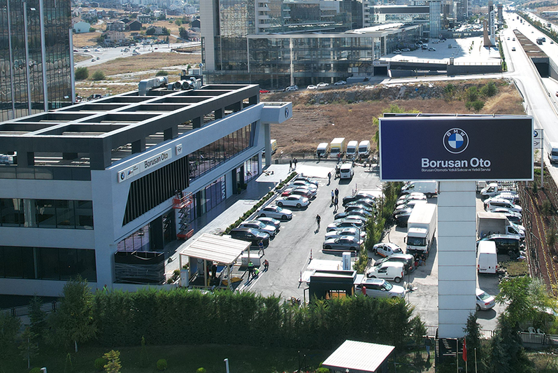

Doğru Araç Seçimi
Günümüz dünyasında yapay zeka ve makine öğrenmesi gittikçe yaygınlaşıyor.
Siz de bu araçların kullanımını araç seçimi yaparken deneyimlemek isterseniz, işte size birkaç soru?
Günümüz dünyasında yapay zeka ve makine öğrenmesi gittikçe yaygınlaşıyor.
Siz de bu araçların kullanımını araç seçimi yaparken deneyimlemek isterseniz, işte size birkaç soru?